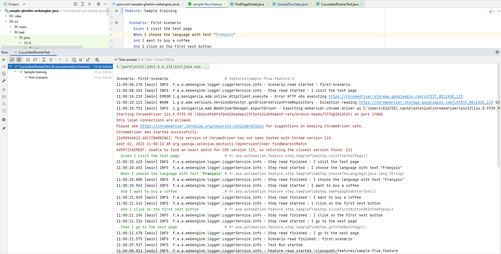

Writing test cases - Gherkin Approach (Java / Spring boot)
In this article we will show you how to write test cases using Gherkin approach. Gherkin approach is often used to test features in Behavior-Driven Development (for example: acceptance criteria of a user story) and in Agile environment. The test cases are represented by test scenarios written in gherkin language, and each sentence is implemented by code-behind. You can reuse the same sentence across the test project so the code-behind can also be reused.
With this method, testers (or business users) and automation engineers can work together: One can maintain the repository of test scenarios in Gherkin and the other can maintain automation implementations. When a scenario is not yet automated, it can still be served for manual execution.
Note
Gherkin approach is perfect for feature testing combined with BDD (Behavior-Driven Development).
But it may not be suitable for complex end-to-end tests. For this use cases, Gherkin scenarios may be too long, and the code-behind of each phrase may be difficult to maintain. For complex end-to-end tests, you may consider Keyword-driven/Data-driven testing approach.
Step 1: Prerequisites for Gherkin Approach
JDK 8, maven and lombok
Step 2: Create a simple maven project
Open pom.xml paste below code
<?xml version="1.0" encoding="UTF-8"?>
<project xmlns="http://maven.apache.org/POM/4.0.0" xmlns:xsi="http://www.w3.org/2001/XMLSchema-instance" xsi:schemaLocation="http://maven.apache.org/POM/4.0.0 http://maven.apache.org/xsd/maven-4.0.0.xsd">
<modelVersion>4.0.0</modelVersion>
<groupId>fr.axa.automation.webengine</groupId>
<artifactId>sample-gherkin-webengine-java</artifactId>
<version>1.0.0-SNAPSHOT</version>
<packaging>jar</packaging>
<name>sample-gherkin-webengine-java</name>
<properties>
<maven-compiler-plugin.version>3.10.1</maven-compiler-plugin.version>
<maven-surefire-plugin.version>3.0.0-M7</maven-surefire-plugin.version>
<webengine-boot-gherkin.version>2.2.0</webengine-boot-gherkin.version>
</properties>
<dependencies>
<dependency>
<groupId>fr.axa.automation.webengine</groupId>
<artifactId>webengine-boot-gherkin</artifactId>
<version>${webengine-boot-gherkin.version}</version>
</dependency>
</dependencies>
<build>
<plugins>
<plugin>
<groupId>org.apache.maven.plugins</groupId>
<artifactId>maven-compiler-plugin</artifactId>
<version>${maven-compiler-plugin.version}</version>
</plugin>
<plugin>
<groupId>org.apache.maven.plugins</groupId>
<artifactId>maven-surefire-plugin</artifactId>
<version>${maven-surefire-plugin.version}</version>
</plugin>
</plugins>
</build>
</project>
For your information, we use junit 5 with the framework
Step 3: Project structure
- In
Featuresfolder, test scenarios written in Gherkin Language and saved in.featuresfile. - In
step, the implementation of these scenarios by code. - In
model, the page model. - CucumberRunnerTest : Runner for executing tests
Step 4: Observe SUT and identify UI Elements
Observing system under test from Developer tools provided with browser. Here in our tutorial, we will operate 3 elements, to benefits the advantages of the Framework, we will put these 3 elements into a PageModel.

This is exactly the same step we've discussed in Linear Script Approach. Please refer to Observe SUT and Identify UI Elements for more information.
Step 5: Write test scenarios (.feature)
Create a Feature file and name it sample-flow.feature, place it under the folder features
Paste this below code :
Feature: Sample training
Scenario: first-scenario
Given I visit the test page
When I choose the language with text "Français"
And I want to buy a coffee
And I click on the first next button
Then I go to the next page
There is no limit how to write the scenario using the keywords given-when-then. But generally, people often use Given to specify the preconditions, When to specify actions and Then to specify expected results.
Following the same naming convention across teams can ensure good understanding of scenarios for all stakeholders.
Step 6: Generate test steps from features
Once the feature is written, place the caret at a step in your .feature file and press Alt + Enter.
Name the java class: SampleFlowStep.java
It will automatically generate code to match each sentence:
package fr.axa.automation.feature.step;
import io.cucumber.java.en.And;
import io.cucumber.java.en.Given;
import io.cucumber.java.en.Then;
import io.cucumber.java.en.When;
public class SampleFlowStep {
@Given("I visit the test page")
public void iVisitTheTestPage() {
}
@When("I choose the language with text {string}")
public void iChooseTheLanguageWithText(String arg0) {
}
@And("I want to buy a coffee")
public void iWantToBuyACoffee() {
}
@And("I click on the first next button")
public void iClickOnTheFirstNextButton() {
}
@Then("I go to the next page")
public void iGoToTheNextPage() {
}
}
Step 5: Complete the code for using page model and browser factory
Create the page model :
package fr.axa.automation.feature.model;
import fr.axa.automation.webengine.core.AbstractPageModel;
import fr.axa.automation.webengine.core.WebElementDescription;
import lombok.AccessLevel;
import lombok.Getter;
import lombok.experimental.FieldDefaults;
import org.openqa.selenium.WebDriver;
@FieldDefaults(level = AccessLevel.PUBLIC)
public class FirstPageModel extends AbstractPageModel {
@Getter
WebElementDescription language = WebElementDescription.builder().tagName("select").id("language").build();
@Getter
WebElementDescription coffeeRadio = WebElementDescription.builder().tagName("input").id("coffee").build();
@Getter
WebElementDescription teaRadio = WebElementDescription.builder().tagName("input").id("tea").build();
@Getter
WebElementDescription waterRadio = WebElementDescription.builder().tagName("input").id("water").build();
@Getter
WebElementDescription nextStep = WebElementDescription.builder().tagName("button").xPath(".//button[contains(text(),\"Next (3-second-delay)\")]").build();
public FirstPageModel(WebDriver webDriver) throws Exception {
populateDriver(webDriver);
}
}
Complete the SampleFlowStep class
package fr.axa.automation.feature.step;
import fr.axa.automation.feature.model.FirstPageModel;
import fr.axa.automation.webengine.helper.WebdriverHelper;
import fr.axa.automation.webengine.step.AbstractStep;
import io.cucumber.java.en.And;
import io.cucumber.java.en.Given;
import io.cucumber.java.en.Then;
import lombok.AccessLevel;
import lombok.Getter;
import lombok.experimental.FieldDefaults;
import org.openqa.selenium.WebDriver;
@Getter
@FieldDefaults(level = AccessLevel.PROTECTED)
public class SampleFlowStep extends AbstractStep {
WebDriver driver;
FirstPageModel firstPageModel;
public SampleFlowStep() throws Exception {
driver = WebdriverHelper.initializeDriver();
firstPageModel = new FirstPageModel(driver);
}
@Given("^I visit the test page$")
public void visitTheTestPage() throws InterruptedException {
addInformation("Open WebEngine test page");
driver.get("http://webengine-test.azurewebsites.net/Step1.html");
}
@And("^I choose the language with text \"([^\"]*)\"$")
public void chooseTheLanguage(String language) throws Exception {
addInformation("Choose the language");
getFirstPageModel().getLanguage().selectByText(language);
}
@And("^I want to buy a coffee$")
public void seePopUpAndEnterText() throws Exception {
getFirstPageModel().getCoffeeRadio().click();
}
@And("^I click on the first next button$")
public void clickFirstButtonOKInThePopup() throws Exception {
getFirstPageModel().getNextStep().click();
}
@Then("^I go to the next page$")
public void goToTheNextPage() {
addInformation("Success");
getDriver().close();
}
}
Step 7: Create the runner class
package fr.axa.automation.feature;
import org.junit.platform.suite.api.ConfigurationParameter;
import org.junit.platform.suite.api.ConfigurationParameters;
import org.junit.platform.suite.api.IncludeEngines;
import org.junit.platform.suite.api.SelectClasspathResource;
import org.junit.platform.suite.api.Suite;
import static io.cucumber.junit.platform.engine.Constants.GLUE_PROPERTY_NAME;
import static io.cucumber.junit.platform.engine.Constants.PLUGIN_PROPERTY_NAME;
@Suite
@IncludeEngines("cucumber")
@SelectClasspathResource("features")
@ConfigurationParameters({
@ConfigurationParameter(key = GLUE_PROPERTY_NAME, value = "fr.axa.automation.feature.step"),
@ConfigurationParameter(key = PLUGIN_PROPERTY_NAME, value = "pretty, html:target/report-gherkin/report.html, fr.axa.automation.webengine.listener.WebengineReportListener, json:target/cucumber-report/cucumber.json")
})
public class CucumberRunnerTest {
}
Step 6: Run test case
Run :

Result : 
Note
The source code of this exercise can be found in our Github repository. Project Name: sample-gerkhin-webengine https://github.com/AxaFrance/webengine-java/sample-gerkhin-webengine